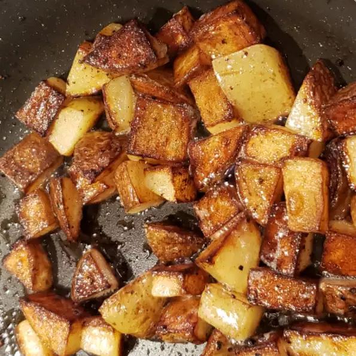

fries

Description:
These home fries turn out crispy every time. They're great for
breakfast or as a side dish. If you prefer crispy hash browns,
use shredded potatoes (instead of cubed) and follow the recipe
directions.
Ingredients
- 3 medium russet potatoes, cubed
- 3 tablespoons butter or margarine
- salt and ground black pepper to taste
Steps:
-
Rinse potato cubes with cold water and drain well.
-
Melt butter in a large skillet over medium heat. Place
potatoes in the skillet and season with salt and pepper;
mix well. Cover and cook for 10 minutes.
-
Remove the lid and cook, turning frequently, until brown and
crisp on all sides, about 10 more minutes.